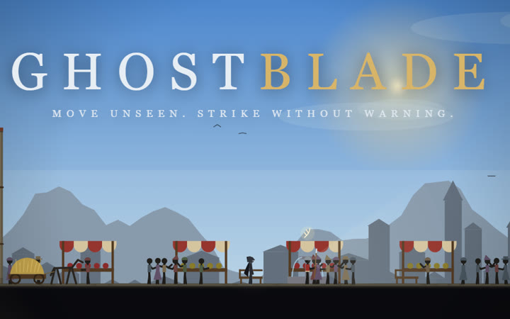

Ghostblade
STEALTH • 1 PLAYER
A side-scrolling stickman stealth and parkour adventure. Climb, wall-run and leap across six city districts, hide in crowds and haystacks, and strike unseen across 10 missions with S+ ghost ranks.
▶ PLAY Ghostblade NOWGhostblade is one of 118 free retro games on Retro World. It runs right in your browser on phone, tablet, PC or TV — no download or account needed, and your progress saves on your device.